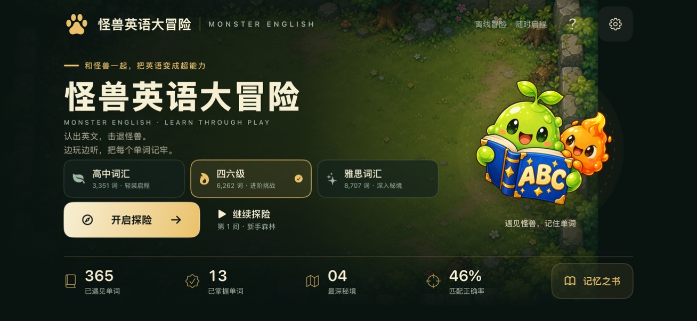

✦✧✧
HELLO, ADVENTURER!

别担心，我们在这里。你的冒险支持小队
LEARN THROUGH PLAY. GROW EVERY DAY.高中 · 四六级 · 雅思
ADVENTURER’S HELP DESK / 冒险者服务站随时回来，随时出发
今天，有什么可以帮到你？
YOUR FIRST QUEST
从一个单词，
开启一场冒险。
认出英文，击退怪兽。边玩边听，让每个单词都多一份记忆。
MONSTER ENGLISH · BASE CAMP
冒险小提示
选择与你的学习目标相符的词库。不必着急，适合自己的节奏，就是好节奏。
熟悉你的营地，然后放心出发。
/
没有找到匹配的问题。试试「进度」「词库」等关键词，或在下方联系支持。
WE’RE ON YOUR TEAM / 冒险支持小队有些关卡，
有些关卡，
我们一起过。
如果常见问题没有解决你的困扰，告诉我们发生了什么。
一份清楚的描述，能帮助我们更快找到问题。
带上这些线索，我们会更有方向
01
你的设备与版本设备型号、系统，以及游戏版本（如可见）
02
问题发生在哪里所选词库、关卡，或出现异常的页面
03
当时发生了什么操作步骤、预期结果，以及实际情况
GitHub Issues 通常公开可见。请勿填写密码等敏感信息，截图也请遮盖个人资料。
休息一下也没关系。怪兽和单词，都在等你回来。